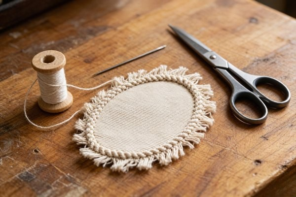

Sew-On Patches: The Traditional Permanent Solution
Sew-on patches are the oldest and still the most reliable way to attach a patch permanently. This guide walks through why stitching wins, how to sew a patch step by step, the thread and stitches that hold up best, and when to choose sew-on over iron-on or Velcro.

Sew-on patches have been holding themselves onto jackets, uniforms, and backpacks for longer than any other attachment method — and they keep winning for one simple reason: a stitch doesn't peel. If you've ever watched an iron-on patch lift at the corner after a few trips through the washing machine, you already know why needle and thread refuse to go out of style.
In this guide we'll break down exactly how to sew on a patch, which thread and needle to reach for, the stitches that survive the most abuse, and when a sew-on patch beats iron-on or Velcro outright. Whether you're stitching a single morale patch onto a rucksack or producing thousands of uniform patches for a company, the principles below are the same ones our factory applies every day.
1. Why Sew-On Patches Are Still the Most Durable Choice
There's no glue, no heat-activated film, no hook-and-loop to wear out. A sew-on patch is held in place by thread passing physically through both the patch border and the garment fabric, locking them together at the fiber level. That mechanical bond is what makes stitching so hard to beat.
Here's what that durability actually buys you:
- Wash after wash: Thread doesn't melt in the dryer or soften in hot water the way adhesive does. A well-sewn patch shrugs off hundreds of machine cycles.
- Any fabric, no exceptions: Denim, leather, nylon, canvas, wool, even stretch knits. Adhesive and Velcro have strict surface requirements; a needle just needs something it can pass through.
- Tamper and peel resistance: There's no edge to catch and lift, so sew-on patches hold up to rough field use, heavy bags, and industrial laundering.
- No added bulk or shine: The backing stays flat and clean, which matters when a patch sits directly against the body or under other layers.
Pro Tip
If you want the speed of iron-on with the permanence of sewing, ask for an iron-on backing plus a sewn finish. The adhesive holds the patch in position while you stitch, and the stitches carry the real load long-term.
2. How to Sew On a Patch: Step-by-Step
You don't need a sewing machine or any special skill. A hand needle, a length of thread, and about ten quiet minutes will do it. Here's the full process, in order.
Step 1 — Position the patch and lock it down
Lay the garment flat and place the patch where you want it. Hold it with straight pins, or better, with a couple of small strips of double-sided fabric tape. Tape beats pins here because it keeps the patch from shifting while you work and doesn't leave pin holes in leather or coated fabric.
Step 2 — Pick your thread and needle
Reach for polyester or nylon thread — it's stronger than cotton and won't rot or fade. Match the thread color to the patch border so the stitches disappear, or go deliberately contrasting if you want the stitching to be part of the look. For the needle, a medium sharp or a "between" needle handles most patch fabric without straining your fingers.
Step 3 — Thread, knot, and start from the back
Cut about 24 inches of thread (much longer and it'll tangle), thread the needle, and tie a small knot at the end. Start from the inside of the garment so the knot hides against the body and never shows on the face of the patch.
Step 4 — Stitch around the border
Work your way around the merrowed or heat-cut edge. The whip stitch is the workhorse here — push the needle up through the back, over the edge, and back down, spacing the stitches about 1/8 inch apart. Keep them even and pull gently after every few stitches so the thread lies flat without puckering the fabric.
Step 5 — Finish with a secure knot
When you reach your starting point, take a tiny back stitch, pass the needle through the loop to form a knot, and run the tail under a few nearby stitches before trimming. Tug the patch lightly from every side — it should feel like it's part of the garment now.
3. Thread, Needle & Stitch: What Actually Holds Up
Ask five tailors how to attach a patch and you'll get five favorite stitches. They all work, but they're not interchangeable. Here's the shortlist that matters.
- Whip stitch: The most common choice for patches. It wraps the border neatly, is fast, and hides the thread against a same-color merrowed edge.
- Blanket stitch: A decorative version of the whip stitch that creates a visible "railroad track" edge — great when the stitching is meant to be seen on a denim jacket or hat.
- Running stitch: Quick and nearly invisible from the front, but less durable than wrapping stitches. Reserve it for lightweight, low-stress applications.
- Back stitch (by hand) or zigzag (by machine): The strongest options. If the patch will be yanked on — think a large motorcycle-club back patch — this is what you want.
On thread choice, there are two rules worth remembering. First, synthetic beats natural: polyester and nylon hold their strength when wet and resist UV fading far better than cotton. Second, clear monofilament is the secret weapon when you can't match the border color — it's nearly invisible against any patch and any fabric.
4. Sew-On vs. Iron-On vs. Velcro: Which Backing Wins When
No single backing is "best" — each one owns a specific job. Understanding the trade-off is how you avoid ordering a thousand patches with the wrong backing.
If your patch has to stay put forever and survive washing, sew-on is the answer. If you need to swap insignia between uniforms by the hour, that's where Velcro patches take over. Iron-on sits in the middle — brilliant for fast, flat, low-cost applications, less brilliant the moment the garment meets a hot dryer. Many of our customers order a custom embroidered patch with iron-on backing and simply add a few hand stitches around the edge for the best of both worlds.
5. Where Sew-On Patches Shine Brightest
Some applications practically demand stitching. If you're in any of these categories, treat sew-on as your default.
- Motorcycle club back patches: Large, heavy, and symbolic. These get sewn, period — glue can't hold the weight and Velcro would cheapen the look.
- Military and uniform insignia: Regulations and daily wear both favor a permanent, flat, tamper-proof attachment.
- Leather goods: Leather jackets, bags, and wallets take thread beautifully but reject heat and adhesive. Stitching is the only method that truly lasts here.
- Workwear and hospitality uniforms: These go through industrial laundering at high temperatures, which kills iron-on adhesive fast.
- Denim jackets, hats, and beanies: Where the stitching itself becomes part of the aesthetic — a visible blanket stitch is half the appeal.

For larger production runs, the same logic scales up. Our team can supply sew-on patches in any shape and size, with any of the border styles covered in our color and design guide, so your stitching department gets patches that are clean and consistent every time.
Frequently Asked Questions (FAQ)
Q1: Can I sew through an iron-on patch?
Yes, and it's a common trick. Apply the patch with heat first so the adhesive holds it in place, then run stitches around the edge. You get the speed of iron-on with the permanence of sewing. Just use a sharp needle and expect a little extra resistance where the adhesive film sits.
Q2: How long do sew-on patches last?
As long as the garment itself — often years of regular washing and wear. The thread will generally outlast the surrounding fabric. If the border thread ever does wear thin, the patch can be re-stitched in minutes without damaging the garment.
Q3: What is the best stitch for a patch?
The whip stitch is the most practical all-rounder: fast, neat, and durable around a merrowed border. For patches under heavy stress, a back stitch (by hand) or a machine zigzag provides the strongest hold. Choose a blanket stitch when you want the stitching to be a visible design feature.
Q4: Can a sew-on patch be removed and reused?
Absolutely. Since there's no adhesive, you simply cut the stitches and the patch comes away clean, ready to be sewn onto something else. That reusability is one reason sew-on patches remain popular for collectors and scout groups.
Q5: Do sew-on patches work on leather?
They're actually the best choice for leather. Heat and adhesive can scorch or fail on leather, while stitching bonds permanently. Use a leather needle and a slightly wider stitch spacing to avoid tearing the hide.
Need Durable Sew-On Patches for Your Next Order?
Get factory-direct wholesale pricing, free digital proof in 12 hours, and no minimum quantity. Tell us your design and we'll handle the rest.
Get Free Quote